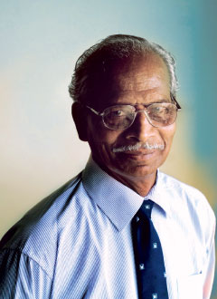

<html>

<head>
    <title>BrookField High School Website</title>
    <meta name="viewport" content="width=device-width, initial-scale=1">

    <link rel="stylesheet" href="https://maxcdn.bootstrapcdn.com/bootstrap/3.4.0/css/bootstrap.min.css">

    <script src="https://ajax.googleapis.com/ajax/libs/jquery/3.4.1/jquery.min.js"></script>

    <script src="https://maxcdn.bootstrapcdn.com/bootstrap/3.4.0/js/bootstrap.min.js"></script>

    <link rel="stylesheet" href="https://cdnjs.cloudflare.com/ajax/libs/font-awesome/4.7.0/css/font-awesome.min.css">

    <link rel="stylesheet" href="style.css">
</head>

<body>
    <nav class="navbar-inverse" style="position:sticky;top:0;z-index:99999">

        <div class="navbar-header">
            <button type="button" class="navbar-toggle" data-toggle="collapse" data-target="#myNavbar">
                <span class="icon-bar"></span>
                <span class="icon-bar"></span>
                <span class="icon-bar"></span>
            </button>
            <a class="navbar-brand" href="#">Brookfield High</a>
        </div>

        <div class="collapse navbar-collapse" id="myNavbar">
            <ul class="nav navbar-nav">
                <li><a href="#Describe">School Description</a></li>
                <li><a href="#School">School Management</a></li>
                <li><a href="#Admin">Admissions</a></li>
                <li><a href="#Activitites">Other Activities</a></li>
                <li><a href="#Map">Route Map</a></li>
            </ul>
        </div>

    </nav>
    <section id="Describe">
        <div class="firstdiv">
            <h1>School Description</h1><br><br><kbd id="kbd">Brookfield High</kbd>
            <br><br><br><br>
            <p id="p">The Schools is wonderful as there are many activities and also there are many teachers. There are many students studying in this schools and everybody who are passing in 10th grade are getting a nice seat in big colleges.Brookfield High is a contemporary high school set up off Hosur Road near Electronic City (3.5kms from EC Main gate). 2010-11 is the inaugural year for the school. Admission open for classes Toddlers, Nursery, K1, K2, Std I, Std II, Std III, Std IV.<br><br>
                The Mission of Brookfield High is -
                1. To create an institution that will be highly respected for the quality of education imparted.
                2. Develop leadership qualities in our students, one child at a time
                3.Deploy contemporary curriculum for smart learning
                4.Prepare students to thrive in an increasingly global work place
                5.Inculcate an appreciation for civic responsibility and environmental involvement through education

            </p><a href="http://brookfieldhigh.com/about.html" target="_blank"><b>For More information click here</b></a>
        </div>
    </section>
    <section id="School">
        <div class="secondhdiv">
            <h1>School Management</h1><br><br><kbd>Mr.Balu Pandian</kbd>
        </div><br><br><br><br>
        <p>The Managing trustess are Mr. Balu Pandian who is the chairman of brookfield high.Balu Pandian upped and returned from a high-profile career in Singapore to set up his dream project: Brookfield High. The gentleman has over 20 years of corporate management experience – both local and international, spanning several business sectors. In addition to a successful career in the corporate sector, Balu has also had a long stint with several leading advertising agencies. The Director of Brookfield High is Mrs. Vanita Balu, Vanita, besides being a graduate in Physics, holds a Masters in Computer Management from Poona University.

            It was during her corporate career in education that she got to focus on content creation.Her responsibilities will include administration as well as plotting the technology road map for the school.
            The Trustees of Brookfield High are Ms Dr. S Rajamani along with his assisstants who are Ms Kala Sadasivam and Ms Kumuda Rajamani.</p><a href="http://brookfieldhigh.com/managingtrustees.html" target="_blank"><b>For More information click here</b></a>
    </section>
    <section id="Admin">
        <div class="thirddiv">
            <h1>Admissions</h1>
        </div>
        <p>There are admissions available from kindergarden till higher grades like 10th.</p>
        <a href="http://brookfieldhigh.com/admissions.html" target="_blank"><b>For More information click here</b></a>

    </section>
    <section id="Activitites">
        <div class="fourthdiv">
            <h1>Other Activities</h1>
        </div>
        <p>There are many activities in Brookfield High high as football, cricket, basketball, kho-kho, and running practice that is atheletics. Apart from these every last friday of the month we had club activities as cooking club, singing club, dancing club, football club, Maths club, art club and many more. Football, Cricket and basketball are played every friday afternoon. Kho-Kho is played during atheletic practice. Atheletic practice is done every morining at 7:00. Only students who are selected can participate in atheletics.</p>
    </section>

    <section id="Map">
        <div class="fourthdiv">
            <h1>Route Map</h1>
        </div><iframe src="https://www.google.com/maps/embed?pb=!1m18!1m12!1m3!1d3890.0744532927492!2d77.697594614283!3d12.83846532126061!2m3!1f0!2f0!3f0!3m2!1i1024!2i768!4f13.1!3m3!1m2!1s0x3bae6dbf04ce661b%3A0x316999fbb561c85c!2sBrookfield%20High%20School!5e0!3m2!1sen!2sin!4v1609400248140!5m2!1sen!2sin" width="1350" height="450" frameborder="0" style="border:0;" allowfullscreen="" aria-hidden="false" tabindex="0"></iframe>
    </section>
    <section id="Alumni">
        <div class="page-header col-lg-12 col-md-12 col-sm-12 col-xs-12">
            <h2 class="text-capitalize">alumni</h2>
        </div>
        <div class="col-lg-3 col-md-12 col-sm-12 col-xs-12 book" data-toggle="modal" data-target="#First_Space_Encyclopedia">
            <hr>
            <p class="text-primary">Balu Pandian</p>
        </div>
        <div class="modal fade" id="First_Space_Encyclopedia">
            <div class="modal-dialog">
                <div class="modal-content">
                    <div class="modal-header">
                        <button type="button" class="close" data-dismiss="modal">&times;</button>
                        <h4 class="modal-title">Balu Pandian</h4>
                    </div>
                    <div class="modal-body">
                        
                        <p class="p_modal">Mr. Balu Pandian is the chairman of a school which has more than a thousand students studying. Tha is Brookfield High of Bangalore, Electronic City.Balu Pandian upped and returned from a high-profile career in Singapore to set up his dream project: Brookfield High. The gentleman has over 20 years of corporate management experience – both local and international, spanning several business sectors. In addition to a successful career in the corporate sector, Balu has also had a long stint with several leading advertising agencies. The creative interest developed during this period will find its way into making schooling fun and engaging at Brookfield High.
Balu will be responsible for guiding the culture of the school.</p>
                    </div>
                </div>
            </div>
        </div>
        <div class="col-lg-3 col-md-12 col-sm-12 col-xs-12 book" data-toggle="modal" data-target="#Second_Space_Encyclopedia">
            <hr>
            <p class="text-primary">Mrs. Vanita Balu</p>
        </div>
        <div class="modal fade" id="Second_Space_Encyclopedia">
            <div class="modal-dialog">
                <div class="modal-content">
                    <div class="modal-header">
                        <button type="button" class="close" data-dismiss="modal">&times;</button>
                        <h4 class="modal-title">Vanita Balu</h4>
                    </div>
                    <div class="modal-body">
                        
                        <p class="p_modal">Mrs. Vanita Balu is the director of Brookfield High as well as wife of Mr. Balu Pandian.Vanita, besides being a graduate in Physics, holds a Masters in Computer Management from Poona University.

It was during her corporate career in education that she got to focus on content creation.Her responsibilities will include administration as well as plotting the technology road map for the school.Various academic competitions and certifications that give students exposure to national and international assessments will also fall under her capable supervision. The latter will help students keep abreast of all major international educational benchmarks</p>
                    </div>
                </div>
            </div>
        </div>
        <div class="col-lg-3 col-md-12 col-sm-12 col-xs-12 book" data-toggle="modal" data-target="#Third_Space_Encyclopedia">
            <hr>
            <p class="text-primary">Dr. S Rajamani</p>
        </div>
        <div class="modal fade" id="Third_Space_Encyclopedia">
            <div class="modal-dialog">
                <div class="modal-content">
                    <div class="modal-header">
                        <button type="button" class="close" data-dismiss="modal">&times;</button>
                        <h4 class="modal-title">Dr. S Rajamani</h4>
                    </div>
                    <div class="modal-body">
                        
                        <p class="p_modal">Dr Rajamani has been, in one way or another, a part of education all his life. After obtaining a post graduate degree in Physics from the Madras University, Dr Rajamani served at Madras Christian College for two years. He carried out research at the Indian Institute of Tropical Meteorology, Pune, for over 33 years. For which, he was awarded a PhD by the University of Poona.
He has published over 30 research papers and was awarded gold medals for two of these. Upon invitation, he carried out post doctoral research at the University of Wisconsin, Milwaukee, USA.</p>
                    </div>
                </div>
            </div>
        </div>
    </section>
    <div>
        <marquee behaviour="alternate">
        </marquee></div>

</body>

</html>
